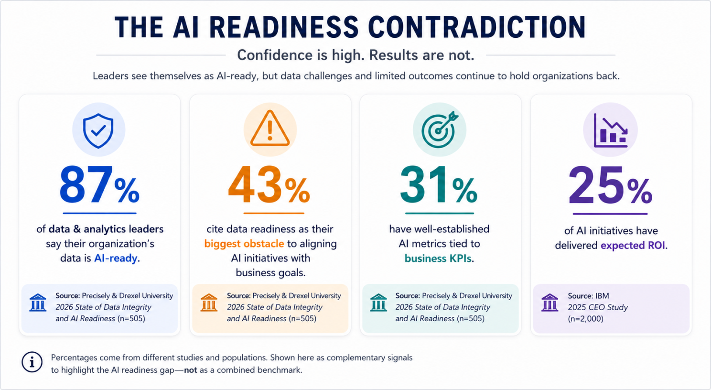
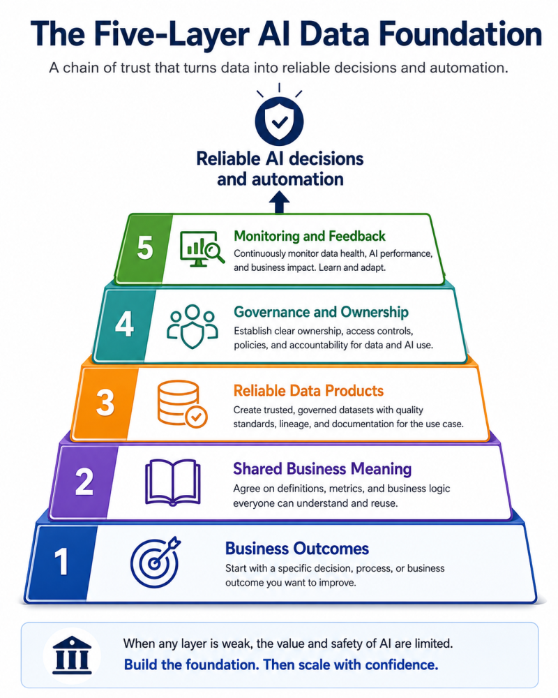

Written by Jonah Robinson
Written by Jonah Robinson
Before companies scale AI, they need to answer a simpler question: can they trust the data it will use?
Companies are moving quickly on AI.
They are testing copilots, building internal assistants, evaluating agents, and asking where automation can remove work from the business.
But many of those conversations begin too far downstream.
They start with questions like:
- Which model should we use?
- Which AI platform should we buy?
- Where could we deploy an agent?
- How quickly can we automate this process?
There is a more important question that should come first:
What information will this system be allowed to believe?
That question is not as exciting as talking about models, agents, and automation.
It is also the question that determines whether an AI initiative becomes useful, unreliable, or dangerous.
AI does not create a trustworthy business foundation. It works with the foundation a company already has.
If KPI definitions are inconsistent, reports conflict, source data is unreliable, and ownership is unclear, AI will not quietly solve those problems.
It will use them.
And in many cases, it will use them faster, more confidently, and across more decisions than any analyst ever could.
The contradiction behind AI readiness
Recent research shows a clear gap between how ready companies believe they are and how ready they actually appear to be.
In the 2026 State of Data Integrity and AI Readiness study from Precisely and Drexel University, 87% of data and analytics leaders said their organization’s data was AI-ready.[1]
At the same time:
- 43% identified data readiness as their biggest obstacle to aligning AI with business goals.[1]
- Only 31% had well-established AI metrics tied to business KPIs.[1]
Those findings came from the same study.
That tells me many organizations are using a very loose definition of “AI-ready.”
Having data in the cloud does not make it AI-ready.
Connecting an AI tool to a database does not make the data trustworthy.
Completing a proof of concept does not mean a system is ready to influence real decisions.
AI readiness is not simply about access.
It is about whether a company understands the meaning, quality, ownership, limitations, and intended use of the data behind the system.

The results of AI initiatives are beginning to reflect this disconnect.
IBM’s 2025 CEO Study found that only 25% of AI initiatives had delivered their expected return on investment. Just 16% had scaled across the enterprise.[2]
Data is not the only reason AI initiatives struggle. Poor workflow design, weak use cases, limited adoption, skill gaps, and unrealistic expectations all play a role.
But one pattern appears repeatedly across the research:
Companies are trying to scale intelligence before they have established trust in the information beneath it.
PwC’s 2026 Digital Trends in Operations Survey found that only 30% of operations leaders reported significant improvement in data quality and reliability.[3]
At the same time, 87% said poor data quality had limited their progress in producing value from digital initiatives.[3]
The problem is not that organizations need perfect data before they begin using AI.
They do not.
The problem is that many companies cannot clearly explain:
- Which data is reliable enough for a specific decision
- Who owns that data
- How the relevant metrics are defined
- Where the data came from
- When it was last updated
- How failures will be detected
That is a much higher standard than simply having data available.
AI changes the cost of bad data
Poor data quality is not a new problem.
Companies have dealt with duplicate customer records, missing fields, inconsistent metrics, outdated spreadsheets, manual adjustments, and conflicting reports for decades.
AI changes the scale of the consequences.
When a dashboard contains an incorrect number, a manager may notice that something looks wrong.
Someone can pause the meeting, question the result, and ask an analyst to investigate.
When an AI system receives the same incorrect number, it may use it to:
- Generate an executive summary
- Recommend a business action
- Prioritize a customer or account
- Produce a forecast
- Trigger an automated workflow
- Answer questions from employees
- Guide another AI agent
The problem changes from:
Someone viewed an incorrect result.
to:
A system repeatedly acted on an incorrect result.
That distinction becomes even more important as companies move from AI assistants that provide information to AI agents that perform work.
OneStream’s 2026 research found that 47% of surveyed finance and IT executives had made a material business decision using inaccurate, incomplete, or outdated financial data during the previous 12 months.[4]
Seventy-two percent said bad data had cost their organizations at least $500,000, while 37% reported costs exceeding $1 million.[4]
The same research found that executives who had made decisions using bad data were four times more likely to use ten or more AI tools than their peers.[4]
That should change the way leaders think about AI readiness.
Before giving an AI system greater authority, a company needs to understand the reliability of the information feeding it.
AI does not establish a single source of truth.
It consumes whichever source of truth the organization provides.
Data trust does not mean perfect data
One mistake companies make is assuming the alternative is to delay AI until every dataset is flawless.
That is unrealistic.
Most companies would never move forward.
Data trust is more practical than data perfection.
A trusted dataset is fit for its intended purpose. Its limitations are understood. Its meaning is consistent. Its source is traceable. Someone is accountable for maintaining it.
For a dataset or metric to be trusted, a company should be able to answer five basic questions:
- Is it accurate enough for this decision?
- Will different systems produce the same answer?
- Does everyone understand what the metric means?
- Is the information current enough to act on?
- Who is responsible when it is wrong?
If those questions cannot be answered for a traditional dashboard, they will not become easier after AI is added.
The five-layer AI data foundation
Companies do not need to rebuild their entire data environment before pursuing AI.
They do need to create a reliable chain between the business decision they want to improve and the data an AI system will use.
I think of that chain as a five-layer AI data foundation.

1. Business outcomes
Every AI initiative should begin with a decision, process, or outcome.
“Use AI in operations” is not a use case.
“Identify orders that are at risk of missing their promised delivery date early enough for a manager to intervene” is a use case.
The second version identifies:
The decision being improved
The person responsible for acting
The information required
The time available to act
The result that will determine success
Without that clarity, companies often build impressive demonstrations that never become useful operating capabilities.
A model can work technically and still solve the wrong problem.
This matters because only 31% of data and analytics leaders in the Precisely and Drexel study said their organizations had well-established AI metrics tied to business KPIs.[1]
Without a defined business outcome, it becomes difficult to determine whether an AI system has created value at all.
2. Shared business meaning
Before an AI system can reason about the business, the organization must agree on what its business terms mean.
What counts as an active customer?
When is revenue recognized?
What makes an order late?
How is turnover calculated?
Which events qualify as safety incidents?
These definitions are often scattered across spreadsheets, dashboards, SQL queries, documentation, and the institutional knowledge of individual employees.
That creates a problem even before AI enters the picture.
Two reports can use the same metric name while calculating completely different results.
A KPI dictionary, semantic layer, or governed metric catalog creates shared business meaning.
It gives analysts, leaders, dashboards, and AI systems a common language.
This layer is especially important for generative AI.
A system may be technically capable of querying data while still misunderstanding what a field or metric means inside the organization.
Earlier research from Precisely and Drexel found that inconsistent data definitions and formats were among the most common barriers to achieving high-quality data.[1]
3. Reliable data products
Once the business meaning is clear, the required data must be made reliable enough for the use case.
That may involve:
- Identifying authoritative source systems
- Reconciling conflicting records
- Managing duplicates
- Handling missing values
- Standardizing dates and categories
- Documenting transformations
- Defining acceptable quality thresholds
- Tracking lineage from source to output
The goal is not to create one enormous, perfect enterprise dataset.
The goal is to create a trusted data product that supports a defined business decision.
For an inventory use case, that may include orders, inventory availability, supplier lead times, and shipment status.
For customer service, it may include account history, support interactions, product documentation, and approved policies.
The scope should be determined by the decision the company is trying to improve.
It should not be determined by a vague ambition to centralize everything.
Only 19% of executives in OneStream’s 2026 research said that most of their AI inputs came from a single, centralized enterprise system.[4]
The study also found that only about half had established a consistent source of truth, implemented data-quality rules, or automated reconciliation between systems.[4]
That is the environment in which many companies are currently attempting to scale AI.
4. Governance and ownership
Data quality cannot remain the informal responsibility of whichever analyst happens to notice a problem.
Every critical data product, KPI, and AI use case should have clear ownership.
The business owner should be accountable for the meaning and appropriate use of the information.
The technical owner should be accountable for its reliability, security, movement, and availability.
Governance should also answer questions such as:
- Who can access the data?
- Which information may an AI system use?
- How is sensitive information protected?
- Who approves changes?
- Can a decision be traced back to its source?
- When is human approval required?
- Who is responsible for correcting an error?
The Precisely and Drexel study found that 71% of organizations with data-governance programs reported high trust in their data, compared with 50% of organizations without governance programs.[1]
The study also found that organizations extending existing data governance to cover AI performed better than organizations that treated AI governance as a separate effort.[1]
Governance is not paperwork added after an AI system has been built.
It is part of the system.
5. Monitoring and feedback
Data readiness is not something a company certifies once and then forgets.
Source systems change.
Business processes evolve.
Definitions are revised.
Customer behavior shifts.
Models drift.
New failure patterns appear.
A production AI system needs continuous monitoring in three areas.
Data health
Is the data complete, current, valid, and arriving as expected?
AI performance
Are the outputs accurate, useful, safe, and consistent enough for the use case?
Business performance
Is the system improving the outcome it was designed to affect?
Many organizations monitor whether a system is technically available.
Far fewer monitor whether it is continuing to create business value.
That is how pilots remain alive long after they have stopped being useful.
BARC’s 2026 survey of 1,579 data and analytics professionals ranked data-quality management as the leading priority in data, BI, and analytics.[5]
Data security, governance, culture, and literacy completed the top group of priorities.[5]
The message was clear: companies are increasingly recognizing that AI success depends on the fundamentals beneath it.
A practical 90-day starting point
Building a trusted data foundation does not have to mean launching a multiyear transformation program before testing AI.
A company can begin with one contained, valuable use case.
Days 1 through 15: Define the decision
Choose a recurring decision or process where better information could create measurable value.
Document:
- The current process
- The decision owner
- The desired outcome
- Baseline performance
- Potential financial or operational value
- The acceptable level of risk
The use case should be selected because the business problem matters, not because the technology looks impressive.
Days 16 through 30: Map the meaning and the data
Identify the metrics, definitions, source systems, documents, and business rules the use case requires.
Look for disagreements early.
When two departments define the same KPI differently, that is not merely a technical problem.
It is a business decision that must be resolved before AI can safely use the metric.
Days 31 through 60: Build the minimum trusted data product
Create the smallest governed dataset capable of supporting the use case.
Add:
- Quality rules
- Documentation
- Ownership
- Access controls
- Lineage
- Refresh expectations
- Monitoring
Do not attempt to solve every data problem across the enterprise.
Solve the issues that directly affect the selected decision.
Days 61 through 90: Pilot with human oversight
Introduce the AI capability into the real workflow while maintaining human review.
Measure:
- Accuracy
- Override rate
- Time saved
- User adoption
- Error severity
- Business impact
- Data-quality incidents
Document where the system fails, not only where it succeeds.
A pilot should not be judged by whether the AI produced an impressive answer once.
It should be judged by whether the business can use it repeatedly, safely, and economically.
What leaders should stop doing
There are four habits that consistently make AI initiatives harder than they need to be.
Stop buying tools before defining decisions
Technology selection should follow the use case, data requirements, workflow, and risk level.
It should not lead them.
Stop separating AI governance from data governance
AI governance cannot compensate for weak ownership, inconsistent definitions, and unknown lineage.
The two disciplines need to operate together.
The research supports this connection: organizations with governance programs report higher levels of trust in their data, and those that expand governance to include AI outperform those that create disconnected AI-governance efforts.[1]
Stop waiting for all data to become perfect
The goal is not universal perfection.
The goal is fit-for-purpose trust around the data required for a specific business outcome.
Stop counting pilots as business value
A working demonstration proves technical feasibility.
It does not prove adoption, scalability, reliability, or ROI.
IBM’s finding that only 25% of AI initiatives had delivered expected ROI, while only 16% had scaled enterprise-wide, shows how wide the gap remains between experimentation and business value.[2]
AI readiness is a chain of trust
AI readiness is not a box a company checks after purchasing a platform or moving data to the cloud.
It is a chain of trust connecting:
- A clearly defined business outcome
- Shared definitions
- Reliable data
- Accountable owners
- Governed access
- Continuous monitoring
- Measurable results
A weakness anywhere in that chain limits what the organization can safely automate.
The companies that create the most value from AI may not be the companies with the most models, agents, or pilot projects.
They may be the companies with the clearest business logic, the most trusted information, and the discipline to measure whether their systems are improving real decisions.
Before asking how quickly AI can be deployed, leaders should ask a more important question:
Do we trust the data enough to let AI act on it?
References
[1] Precisely and Drexel University, 2026 State of Data Integrity and AI Readiness
The study surveyed 505 data and analytics leaders. It found that:
87% considered their organization’s data AI-ready.
- 43% cited data readiness as the largest obstacle to AI alignment.
- 31% had well-established AI metrics tied to business KPIs.
- 71% of organizations with governance programs reported high trust in their data, compared with 50% without governance programs.
- Extending existing data governance to include AI was associated with better results than creating separate governance structures.
[2] IBM, 2025 CEO Study
IBM surveyed 2,000 CEOs globally. The study reported that:
- 25% of AI initiatives had delivered expected ROI.
- 16% had scaled enterprise-wide.
- 85% of CEOs expected positive ROI from scaled AI efficiency investments by 2027.
[3] PwC, 2026 Digital Trends in Operations Survey
The study surveyed 767 U.S. operations and supply-chain leaders. It found that:
- 30% reported significant improvement in data quality and reliability.
- 87% said poor data quality had hampered progress in creating value from digital initiatives.
- 27% had fully embedded an AI strategy across business units.
- 37% were comfortable assigning AI agents to execute end-to-end processes.
[4] OneStream and The Harris Poll, 2026 Enterprise Data Governance Study
The study surveyed 352 senior finance and IT executives in the United States, United Kingdom, and France. It found that:
- 47% had made a material business decision using inaccurate, incomplete, or outdated data.
- 72% said bad data had cost their organization at least $500,000.
- 37% reported costs exceeding $1 million.
- Only 19% sourced most AI inputs from a centralized enterprise system.
- Only about half had established a consistent source of truth, data-quality rules, or automated reconciliation.
- Organizations with complete finance and IT alignment were 5.5 times more likely to report complete trust in their data.
[5] BARC, Data, BI and Analytics Trend Monitor 2026
BARC surveyed 1,579 data and analytics professionals worldwide. The study ranked:
- Data-quality management
- Data security and privacy
- Data-driven culture
- Data and AI governance
- Data and AI literacy
These results reinforce the conclusion that data fundamentals remain the foundation for successful analytics and AI adoption.